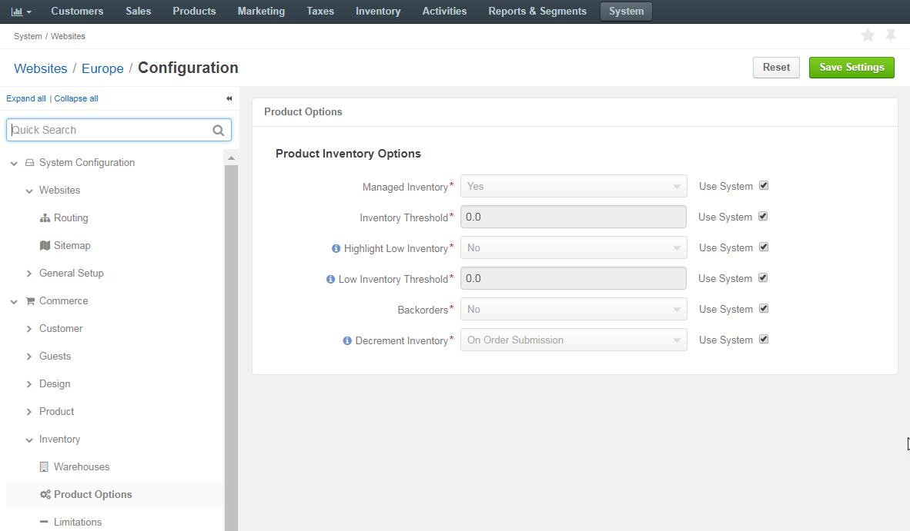

To customize the default product inventory options per website:
Navigate to System > Websites in the main menu.
For the necessary website, hover over the More Options menu to the right of the necessary website and click to start editing the configuration.
Select Commerce > Inventory > Product Options in the menu to the left.
Note
For faster navigation between the configuration menu sections, use Quick Search.
The following page opens:
The following table describes the options available on the page:
| Name | Description |
|---|---|
| Managed Inventory | This options indicates whether the product inventory is handled by OroCommerce vs external application. |
| Inventory Threshold | A minimum quantity of the product that is treated as In stock. When a product quantity reaches this threshold value, the product inventory status falls back to Out Of Stock. |
| Backorders | A flag that indicates whether OroCommerce accepts backorders. When set to yes, buyers and sales people can order products in the quantities that are not currently available in the warehouses. The remaining portion of the order will be sustained until the product gets back in stock. |
| Decrement Inventory | A flag that indicates whether OroCommerce decrements inventory upon order. When both Decrement Inventory and Backorders are enabled, product quantity may get negative. |
| Highlight Low Inventory | This option indicates whether wholesale buyers are able to see that there might not be enough product left in stock for their purchase. |
| Low Inventory Threshold | The minimum stock level defined for the product. Reaching the defined level will trigger a warning message to the buyer in the storefront. |
To customize any of these options:
- Clear the Use System check box next to the option.
- Select Yes/No for the flag-like options, and type in the updated value for the threshold-like options.
Click Save Settings.